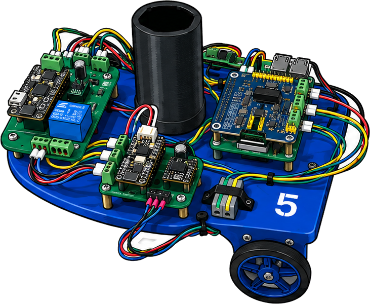

Tiny Trek
The open-source educational robot with a real vehicle network inside.
-
Modular Architecture
Every board is its own node. Use ours, modify them, or design your own.
-
Real vehicle network
Uses modern vehicles protocols, just like the car in your driveway, with CAN, CAN-FD and UDS.
-
Open hardware
Schematics, Gerbers, and STLs, not just firmware. Easy to modify for your environment or project.
